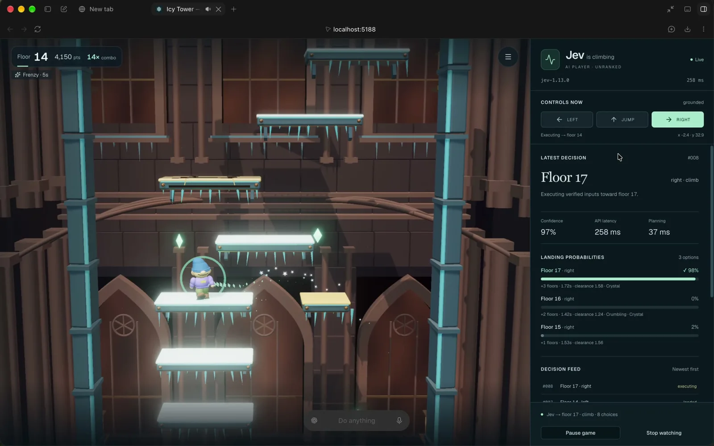
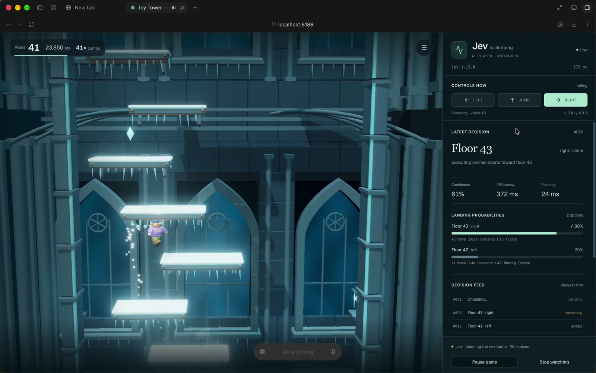

このUIがしていること
作者の説明は「Jevが着地先を選び、ゲームがジャンプを行う」。判断（どの足場へ行くか）と、実行（ボタン操作の連続）が別の層として、パネルに分かれて並んでいる。
- 選んだ足場と確率が1枚のカードにまとまり、選ばなかった候補との差が見える。
- 各候補に、階の差、所要秒数、クリアランス、足場の種類が添えられ、選択の根拠が読める。
- 判断の直後に「executing」、着地後に「landed」と状態が変わるので、選択と結果を照らし合わせられる。
- 確率とconfidenceが別の枠に出る。値が近くても同じものではない。
キャプチャ
{kind=link}

（原寸の画像を開く）{kind=link}

（原寸の画像を開く）見る箇所右パネルの「LATEST DECISION」「LANDING PROBABILITIES」「DECISION FEED」と、左のゲーム画面の進み具合
入力から画面の変化まで
-
判断への入力
ゲームの現在の状態（階、足場の位置と種類など）と、着地先の候補（画面には8 choicesと表示）。
-
Jevの判断
着地先（例: Floor 17・right）を選ぶ。3つの候補の確率は98%、0%、2%と表示され、別項目としてconfidence 97%、API latency 258ms、planning 37msが出る。
-
結果がUIをどう変えるか
「Controls now」に LEFT / JUMP / RIGHT の押下状態、「Latest decision」に選択、「Decision feed」に各判断の executing / landed の状態が出る。ゲーム側はキャラクターがジャンプで移動する。
- 判断型の見立て
- Choice推定
- 「Jevが着地先を選ぶ」という作者の説明と、着地先ごとの確率の表示からの見立て。質問型は画面に明記されていない。
Jevとの適合
離散的な選択を短い間隔で繰り返す用途に向く。掲載した2枚は登る過程（Floor 14と43）で、失敗した場面や、選択が外れたときのふるまいは確認できない。
確認範囲と未確認事項
作者の投稿動画から静止画を確認。ゲームと検査パネルはlocalhost上の作者環境。「速さに驚いた」という評価は作者の印象で、速度や成功率は動画から検証していない。
- 確認済み動画から得た2枚の静止画に見える判断カード、確率、遅延、決定フィード、コントロール表示
- 未検証成功率、失敗時の挙動、長時間動かしたときの安定性、リポジトリの有無と中身
- 推定扱い質問型（Choiceと見立て）と、確率とconfidenceの算出方法
- 引用X投稿は2026-09-17（UTC）。動画から必要な範囲の静止画を切り出して引用。権利は作者に帰属する